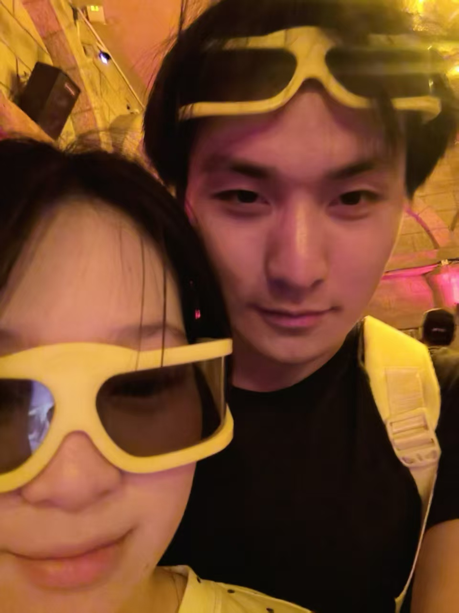

捕捉灵感
从一句“如果……”开始，把模糊变成可被讨论的方向。
我喜欢把模糊的想法变成有形的东西。快速试错，保持好奇，然后把它交到真实的人手里。
“感觉”是我的起点，交付是我的答案。每一次点击、每一段动效，都应该让人感到它被认真对待。
这里没有固定的流程，只有不断运行的实验：想法、协作、打磨、上线。
从一句“如果……”开始，把模糊变成可被讨论的方向。
我负责判断和取舍，让 AI 成为真正的搭档，而不是自动售货机。
部署、分享、收集反馈，再回到下一次迭代。
$ vibe run --mode=curious\n\n✓ translating idea into interface\n✓ testing the weird edge cases\n→ shipping something worth clicking_
小项目、大量实验。下面的内容以个人实验为主，代码会持续收录到 GitHub / JQJQ66 ↗。
把灵感拆解、构建、发布的一套个人工作流。
为校园生活做的轻量信息实验，简单但有用。
记录那些让日常变得更可爱的微小工具。
还没命名的下一个项目，正在等待一个好点子。
人工智能专业的最后一段校园时间。把课程里的知识，变成能被看见、能被使用的作品。
从 Python、数据结构和概率统计开始，第一次认真理解“模型为什么能学会”。
尝试机器学习、计算机视觉和数据分析，把报告里的方法变成小工具。
开始和 AI 一起做产品：我负责问题、判断和体验，它负责加速实现。
继续做几个真正有人使用的项目，找到 AI 技术和真实生活之间的连接。

她提醒我，所有想要创造的东西，最终都是为了让生活更有趣、更温柔。